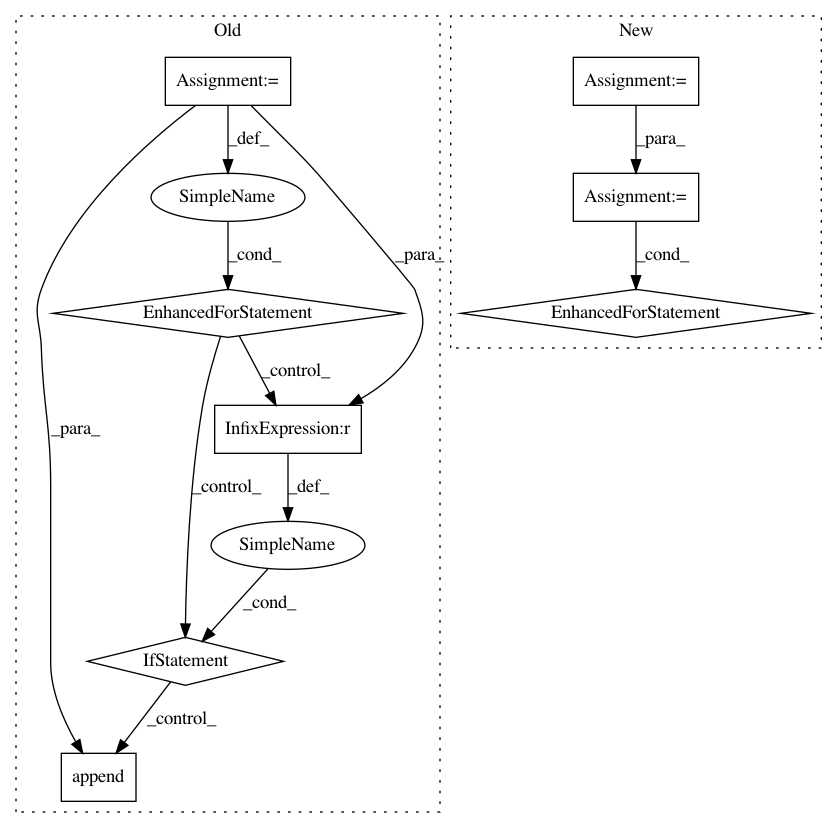

262fabf111006c99e7415093c78e9c26d3ebe0f0,src/sdk/pynni/nni/compression/tensorflow/compressor.py,Compressor,compress,#Compressor#,37
Before Change
The model will be instrumented and user should never edit it after calling this method.
`self.modules_to_compress` records all the to-be-compressed layers
for op in self.bound_model.get_operations():
weight_index = _detect_weight_index(op)
if weight_index is None:
_logger.warning("Failed to detect weight for layer %s", op.name)
return
weight_op = op.inputs[weight_index].op
weight = weight_op.inputs[0]
layer = LayerInfo(op, weight, weight_op)
config = self.select_config(layer)
if config is not None:
self._instrument_layer(layer, config)
self.modules_to_compress.append((layer, config))
return self.bound_model
def get_modules_to_compress(self):
After Change
The model will be instrumented and user should never edit it after calling this method.
`self.modules_to_compress` records all the to-be-compressed layers
modules_to_compress = self.detect_modules_to_compress()
for layer, config in modules_to_compress:
self._instrument_layer(layer, config)
return self.bound_model
def get_modules_to_compress(self):
In pattern: SUPERPATTERN
Frequency: 3
Non-data size: 8
Instances
Project Name: microsoft/nni
Commit Name: 262fabf111006c99e7415093c78e9c26d3ebe0f0
Time: 2019-11-14
Author: 38930155+chicm-ms@users.noreply.github.com
File Name: src/sdk/pynni/nni/compression/tensorflow/compressor.py
Class Name: Compressor
Method Name: compress
Project Name: OpenNMT/OpenNMT-py
Commit Name: 63871d5ab3301d015805abddd8f4259680d6a24a
Time: 2017-09-21
Author: bpeters@coli.uni-saarland.de
File Name: translate.py
Class Name:
Method Name: main
Project Name: microsoft/nni
Commit Name: 81fcff86aa30fb188a66aea2bd682dc1ad08ec16
Time: 2019-11-12
Author: 656569648@qq.com
File Name: src/sdk/pynni/nni/compression/torch/compressor.py
Class Name: Compressor
Method Name: compress